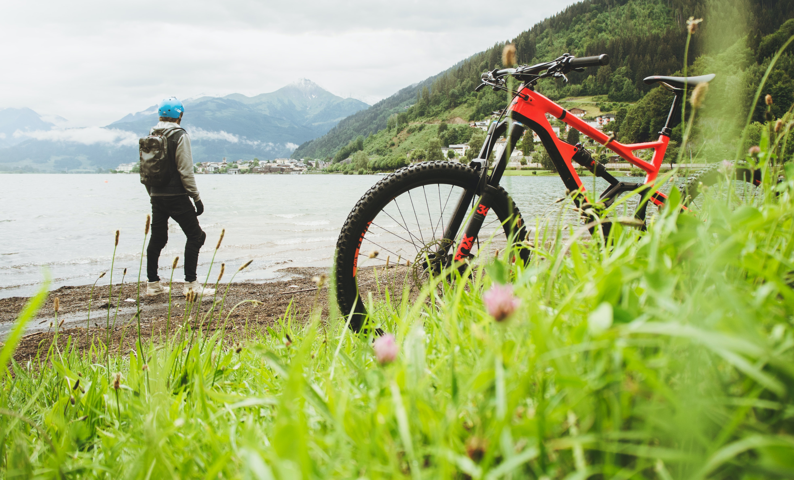

GRAN AVENTURA SIERRAS DE CORDOBA


Un recorrido de 190 kilómetros en tres circuitos ideales para ciclismo de montaña. Caminos de asfalto, tierra y senderos por la montaña, son las constantes en esta ruta con duros ascensos y técnicos descensos para cruzar las sierras de los Comechingones, desde Merlo, San Luis hasta alcanzar el ascenso de Cerro Áspero. Los descensos del Champaqui, bajada a Yacanto de Calamuchita, La Cumbrecita, con descenso hasta Villa General Belgrano. Claramente una ruta para los amantes de la adrenalina.